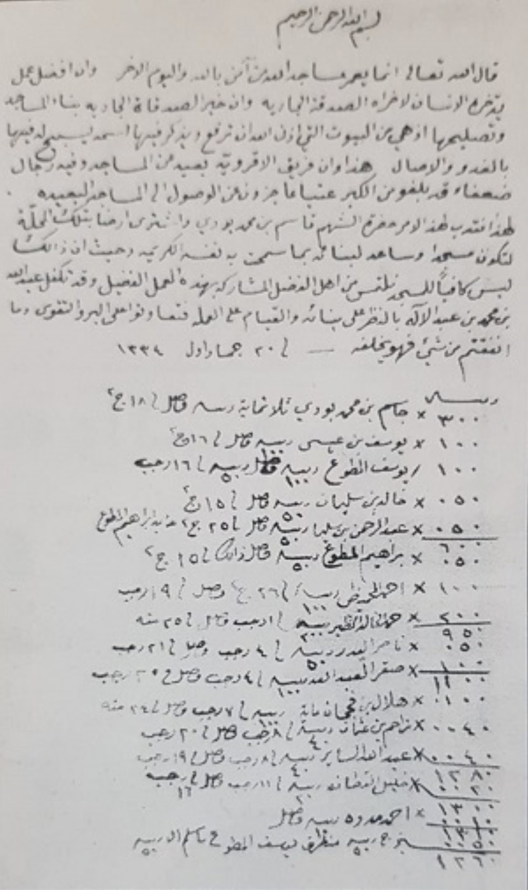

20 Jumada I 1334 AH (1915) · Handwritten subscription list
Kuwait's merchants and people give to build the Al-Qarawiya Mosque, 1915
What it is
The list opens with a call to build a mosque for the people of Al-Qarawiya, then lists each giver and the sum. Number 34 on the full list is «Abdulaziz bin Qatami, 20 rupees». The first page, shown here, also names «Yousef bin Eissa, 100 rupees».
Why it matters
It shows Abdulaziz bin Qatami giving to a mosque in 1915 alongside the merchants of Kuwait.
Page copies

Notes
Only the first page is shown; Abdulaziz's line is on a later page that Torathona transcribes but does not picture.
Others named
Jassim bin Mohammed BoodaiYousef Al-Mutawa
Sources
Torathona (torathona.org).
Archive reference
- Torathona · وثيقة تكاتف تجار الكويت والمواطنين لبناء مسجد القروية
How this text was made: Read from the published page.
Open in the interactive site